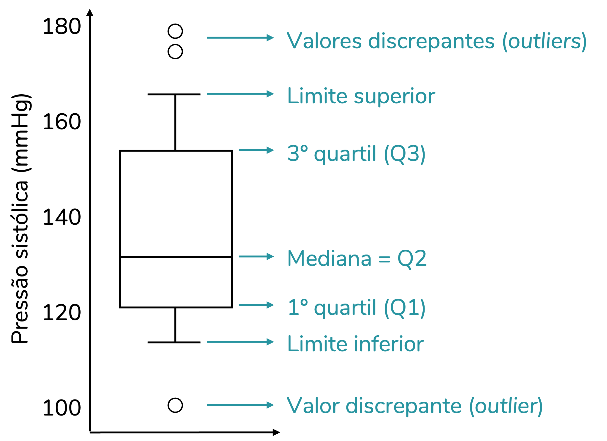
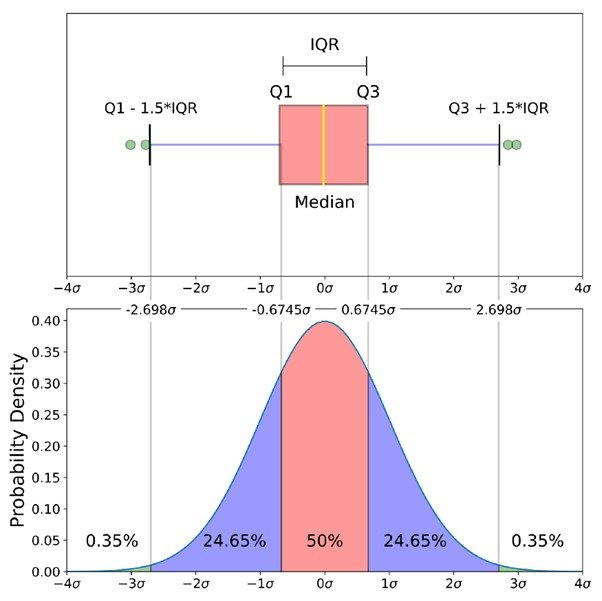

— Digital Plus Aldeota —
Análise Exploratória
de Dados
Uma introdução prática ao processo de investigar, compreender e questionar
conjuntos de dados e gerar mais valor com suas análises.
Bem-vindos
O que você vai levar desta aula
- Entender o que é EDA e por que ela é subestimada na Área de Dados.
- Conhecer as bibliotecas essenciais: pandas, numpy, matplotlib, seaborn.
- Classificar variáveis e construir um dicionário de dados.
- Diagnosticar e tratar valores nulos com base em mecanismos de ausência.
- Aplicar análise univariada, bivariada e multivariada com gráficos adequados.
- Interpretar correlações sem cair em armadilhas comuns.
- Formular perguntas e hipóteses e testá-las com dados.
- Praticar tudo em datasets reais ao final da aula.
◆
A meta não é decorar comandos. É desenvolver intuição sobre como olhar dados.
Roteiro da noite
Como a aula está organizada
Parte 1 · ~1h30
Fundamentos
- O que é EDA
- Tipos de variáveis
- Bibliotecas Python
- Exploração inicial
Parte 2 · ~1h15
Análise estatística
- Tratamento de nulos
- Univariada
- Bivariada
- Multivariada
Parte 3 · ~45min
Hands-on
- Apresentação de 4 datasets
- Aplicação das técnicas
- Discussão dos resultados
- Dúvidas finais
Notebook de referência: ao longo da aula, citaremos repetidamente o notebook
01_-_eda_spanish_wines.ipynb, que servirá como ponto de partida
para os estudos posteriores em casa.
— PARTE 01 —
O que é EDA?
Antes da estatística inferencial, antes do machine learning, antes de qualquer
previsão. Há um passo que precisa vir primeiro.
Definição
Análise Exploratória de Dados
É o processo investigativo de examinar um conjunto de dados para
compreender sua estrutura, padrões, anomalias
e relações, normalmente apoiado em estatísticas descritivas e visualização.
"Análise exploratória de dados nunca pode ser a história completa, mas nenhum outro
procedimento pode servir como sua pedra fundamental."
— John W. Tukey, 1977
Foi John Tukey quem cunhou o termo no livro Exploratory Data Analysis.
Sua provocação central: antes de assumir modelos, é preciso olhar os dados.
O olhar guia as perguntas — não o contrário.
Onde a EDA entra
O lugar da EDA no fluxo de Dados
1
Coleta
Obtenção e ingestão dos dados
3
Feature
Engineering
Criação e seleção de variáveis
4
Modelagem
Treino, validação e ajuste
5
Comunicação
Apresentação e decisão
Atalhos custam caro. Análises sem EDA tendem a gerar informações que não agregam valor ou até
prejudicam o negócio com decisões erradas.
Por que fazer EDA
Cinco objetivos centrais
| # |
Objetivo |
O que você procura responder |
| 01 |
Conhecer a estrutura |
Quantas linhas? Quantas colunas? Que tipos de variáveis existem? Há índice? |
| 02 |
Avaliar a qualidade |
Há valores nulos, duplicados, inconsistentes? Os tipos estão corretos? |
| 03 |
Resumir as distribuições |
Como cada variável se comporta? Onde está a maioria dos valores? |
| 04 |
Investigar relações |
Quais variáveis se movem juntas? Há padrões entre grupos? |
| 05 |
Formular hipóteses |
Que perguntas valem a pena testar? O que surpreende? |
Postura analítica
EDA é um diálogo, não um checklist
A pergunta importa mais que o gráfico
Antes de plotar qualquer coisa, pergunte-se:
"O que eu quero descobrir agora?"
Um histograma sem contexto é apenas decoração. O mesmo histograma feito para
responder uma pergunta específica é evidência.
O dado conduz, você decide
Cada análise levanta novas perguntas. Você itera: olha, anota, formula, testa,
revisa.
No nosso notebook de vinhos, perguntas foram numeradas (Q1 a Q8) e as conclusões
retornaram a elas explicitamente. Esse é o padrão a seguir.
Princípio prático: em uma EDA bem feita, o leitor sempre sabe por que
cada gráfico está ali e o que ele responde.
— PARTE 02 —
Tipos de variáveis
O primeiro passo de qualquer análise: saber com que tipo de dado você está lidando.
Isso muda tudo — o gráfico, a estatística, a interpretação.
Classificação estatística
Duas grandes famílias
Qualitativa
Categóricas
Descrevem qualidades ou categorias. Não fazem
sentido como número.
Subtipos
- Nominal — sem ordem natural.
Ex: tipo de vinho, região,
vinícola.
- Ordinal — possuem ordem.
Ex: escolaridade, faixa etária.
Quantitativa
Numéricas
Expressam quantidades. Fazem sentido somar, subtrair, comparar
magnitudes.
Subtipos
- Discreta — valores contáveis, inteiros.
Ex: nº de reviews, corpo
(1-5).
- Contínua — qualquer valor em um intervalo.
Ex: preço, rating,
peso.
Exemplos práticos
Dataset de vinhos espanhóis — variáveis
| Variável |
Descrição |
Tipo |
Subtipo |
| winery |
Nome da vinícola |
Qualitativa |
Nominal |
| wine |
Nome do vinho |
Qualitativa |
Nominal |
| year |
Ano da safra |
Qualitativa |
Ordinal* |
| rating |
Avaliação média |
Quantitativa |
Contínua |
| num_reviews |
Nº de avaliações |
Quantitativa |
Discreta |
| region |
Região produtora |
Qualitativa |
Nominal |
| price |
Preço em Euros |
Quantitativa |
Contínua |
| type |
Tipo do vinho |
Qualitativa |
Nominal |
| body |
Intensidade do corpo (1-5) |
Quantitativa |
Discreta |
| acidity |
Nível de acidez (1-5) |
Quantitativa |
Discreta |
*Sobre year: tecnicamente é quantitativa discreta, mas neste dataset
foi tratada como qualitativa ordinal por conter o rótulo "N.V."
(Non-Vintage — vinhos sem safra única). Decisões assim são parte da EDA.
Documentação
O dicionário de dados
Um dicionário de dados é uma tabela auxiliar que descreve cada variável:
seu nome, significado, tipo e subtipo.
Pode parecer burocracia, mas é um dos artefatos mais valiosos de uma análise.
Por que vale a pena
- Alinha equipe e leitor sobre o que cada coluna significa.
- Documenta decisões de classificação (ex: year como ordinal).
- Guia a escolha do gráfico e da estatística adequados.
- Reduz retrabalho — você não vai "lembrar" daqui a 6 meses.
# @title Dicionário de dados
df_dict = pd.DataFrame([
{
"variavel": "price",
"descricao": "Preço em Euros.",
"tipo": "quantitativa",
"subtipo": "contínua",
},
{
"variavel": "region",
"descricao": "Região de produção.",
"tipo": "qualitativa",
"subtipo": "nominal",
},
# ... demais variáveis
])
Padrão de construção usado no notebook de referência
— PARTE 03 —
As bibliotecas
essenciais
O ferramental Python que vamos usar do início ao fim. Cada uma tem um papel
bem definido — entender isso evita confusão e código verboso.
Visão geral
O time titular do EDA em Python
Dados
pandas
Manipulação de tabelas (DataFrames). É o esqueleto do trabalho.
import pandas as pd
Computação
numpy
Arrays numéricos e operações vetorizadas. Base de quase tudo.
import numpy as np
Gráficos
matplotlib
Plotagem de baixo nível. Total controle, sintaxe verbosa.
from matplotlib import pyplot as plt
Gráficos
seaborn
Camada estatística sobre matplotlib. Bonito por padrão.
import seaborn as sns
Regra de ouro: pandas + seaborn resolvem
80%
do trabalho de EDA. Você só recorre ao matplotlib para ajustes finos.
pandas
O pacote que organiza tudo
pandas introduz a estrutura DataFrame: uma tabela com linhas e colunas,
índices e tipos. É como um Excel programável, só que infinitamente mais poderoso.
Conceitos que vamos usar
- DataFrame — a tabela inteira.
- Series — uma única coluna.
- Index — a "etiqueta" de cada linha.
- dtype — o tipo de cada coluna (int64, object, float64).
import pandas as pd
# Lendo um CSV
df = pd.read_csv("wines_SPA.csv")
# Selecionando uma coluna (Series)
df["price"]
# Selecionando múltiplas colunas
df[["price", "rating"]]
# Filtrando linhas
df[df["rating"] > 4.5]
# Agrupando
df.groupby("region")["price"].median()
numpy
A base numérica do ecossistema
numpy oferece arrays multidimensionais eficientes e uma vasta biblioteca de
funções matemáticas. Você raramente o usará diretamente, mas pandas e
scikit-learn são construídos sobre ele.
Onde aparece na EDA
- Transformações numéricas (ex: np.log10(price)).
- Funções estatísticas (np.mean, np.median).
- Operações vetorizadas em colunas inteiras.
- Geração de valores aleatórios e sequências.
No notebook, usamos np.log10(df["price"]) para linearizar a relação
entre preço e nota — um truque clássico de visualização.
import numpy as np
# Aplicando log em uma coluna inteira
df["price_log"] = np.log10(df["price"])
# Estatísticas básicas
np.mean(df["rating"]) # média
np.median(df["rating"]) # mediana
np.std(df["rating"]) # desvio
padrão
# Vetorização: opera no array todo
preco_dolar = df["price"] * 1.08
matplotlib & seaborn
Dois níveis, uma mesma engrenagem
matplotlib
Baixo nível. Total controle, código verboso.
import matplotlib.pyplot as plt
fig, ax = plt.subplots(figsize=(10, 5))
ax.hist(df["price"], bins=40)
ax.set_xlabel("Preço (€)")
ax.set_ylabel("Frequência")
ax.set_title("Distribuição")
plt.show()
Você ajusta cada detalhe — útil quando precisa de algo muito específico.
seaborn
Alto nível. API estatística sobre matplotlib.
import seaborn as sns
sns.set_theme(style="whitegrid")
sns.histplot(
data=df, x="price",
kde=True, bins=40
)
plt.show()
Mais conciso, segue o "tidy data" e tem paletas bonitas por padrão.
Combinação clássica: use seaborn para criar o gráfico e
matplotlib para ajustar título, eixos, anotações e layout final.
Isso é o que fazemos no notebook.
Auxiliares
Outras bibliotecas que aparecem
itertools
Biblioteca padrão. Usamos combinations para gerar todos os pares
de variáveis numa análise par a par sem repetir código.
from itertools import combinations
vars = ['price', 'rating', 'body']
list(combinations(vars, 2))
# → [(price,rating), (price,body), (rating,body)]
kagglehub
Cliente oficial do Kaggle para baixar datasets sem precisar logar pelo navegador.
import kagglehub
path = kagglehub.dataset_download(
"fedesoriano/spanish-wine-quality-dataset"
)
IPython.display
Permite renderizar Markdown e HTML em notebooks. Útil para organizar
seções e títulos de saídas.
from IPython.display import Markdown
display(Markdown("### Resumo"))
df.describe()
Setup completo
O bloco de imports que você vai repetir
# @title Carregando Bibliotecas
import pandas as pd
import numpy as np
import seaborn as sns
import itertools
import kagglehub
import os
from matplotlib import pyplot as plt
from IPython.display import Markdown
# @title Definindo tema do seaborn
sns.set_theme(style="whitegrid")
# @title Download do dataset
path = kagglehub.dataset_download("fedesoriano/spanish-wine-quality-dataset")
print("Path to dataset files:", path)
print("Arquivos na pasta:", os.listdir(path))
# @title Importando conjunto de dados
df = pd.read_csv(os.path.join(path, "wines_SPA.csv"))
Boa prática: mantenha esse bloco no topo do notebook, separado em uma
célula com título (no Colab: #@title). Isso facilita a navegação e a reexecução.
— PARTE 04 —
Exploração inicial
dos dados
O primeiro olhar. Cinco comandos que você vai rodar em todo dataset novo
da sua vida — antes de qualquer outra coisa.
Workflow
Os cinco primeiros movimentos
1
.head()
Visualizar as primeiras linhas
2
.tail()
Visualizar as últimas linhas
3
.info()
Tipos e contagem de não-nulos
4
.describe()
Estatísticas descritivas
5
.nunique()
Contagem de valores únicos
Esses cinco comandos respondem 80% das primeiras perguntas que você terá sobre
qualquer tabela nova: tamanho, tipos, qualidade e variedade.
head() & tail()
O primeiro olhar nos dados
df.head(n) retorna as n primeiras linhas (padrão 5).
df.tail(n) retorna as n últimas linhas (padrão 5).
O que olhar
- Quais são os nomes das colunas?
- Os tipos parecem corretos? Há números que vieram como texto?
- Há valores estranhos à primeira vista? Strings em colunas numéricas?
- Existem colunas redundantes (ex: todas com o mesmo valor)?
Atenção: head() mostra amostra do começo, tail() do fim.
Conjuntos ordenados por data ou ID podem esconder padrões diferentes nas pontas.
display(Markdown("### Primeiras
linhas"))
df.head()
Saída típica:
winery wine year rating price ...
0 Tinto Pesquera 2018 4.2 28.53
1 Artadi Vinas 2017 4.3 45.10
2 Contino Gran 2015 4.5 78.20
...
display(Markdown("### Últimas
linhas"))
df.tail()
info()
O raio-x da tabela
df.info() mostra de uma só vez:
- Número total de linhas (RangeIndex).
- Número total de colunas.
- Para cada coluna: nome, contagem de não-nulos e tipo.
- Uso de memória.
Por que é tão útil
Você descobre de imediato:
- Quantas linhas têm valores faltantes em cada coluna.
- Se colunas numéricas vieram como object (texto) — sinal de problema.
- Se o tamanho da tabela é compatível com a memória disponível.
df.info()
<class 'pandas.core.frame.DataFrame'>
RangeIndex: 7500 entries, 0 to 7499
Data columns (total 11 columns):
# Column Non-Null Dtype
--- ------ -------- -----
0 winery 7500 object
1 wine 7500
object
2 year 7498 object
3 rating 7500 float64
4 num_reviews 7500 int64
5 region 7500 object
6 price 7500 float64
7 type 6955 object
8 body 6331 float64
9 acidity 6331 float64
10 country 7500 object
Em vermelho: o que pede atenção. year veio como object,
type/body/acidity têm nulos.
describe() & nunique()
Estatísticas e variedade
.describe()
Estatísticas descritivas para colunas numéricas: contagem, média, desvio padrão,
mínimo, quartis e máximo.
df.describe()
# Para qualitativas:
df.describe(include='object')
O que extrair
- Diferença entre média e mediana → indício de assimetria.
- Comparação entre quartis → onde estão os típicos.
- Distância entre max e Q3 → presença de outliers.
- Para qualitativas: top e freq (valor mais comum).
.nunique()
Conta quantos valores distintos existem em cada coluna.
df.nunique()
winery 458
wine 2334
year 67
rating 8
num_reviews 1148
region 76
price 1577
type 21
body 5
acidity 3
country 1
Achado: country tem só 1 valor único → coluna inútil, será
descartada.
Decisões iniciais
O que o primeiro olhar nos revelou
| Achado |
Diagnóstico |
Ação |
| 7.500 linhas, 11 colunas |
Tamanho confortável para análise local. |
Seguir sem amostragem. |
| country tem 1 valor único |
Coluna constante, sem variabilidade. |
Drop — df.drop(columns=['country']) |
| year veio como object |
Existe "N.V." (Non-Vintage) misturado aos anos. |
Investigar — tratar como qualitativa ordinal. |
| body, acidity têm 1.169 nulos |
Padrão a investigar — pode não ser aleatório. |
Próxima etapa — diagnóstico de nulos. |
| type tem 545 nulos |
Pode ter relação com os nulos de body/acidity. |
Próxima etapa — verificar coocorrência. |
— PARTE 05 —
Tratamento de
valores nulos
Onde mora a maior parte dos vieses sutis. Tratar nulos sem entender por que
eles faltam pode contaminar toda a análise. Vamos fazer isso direito.
O problema
Nulo não é zero
Um valor NaN significa "Not a Number" — e isso é fundamentalmente
diferente de zero, de média, ou de qualquer outro valor que possamos inventar.
❌ Erro comum
Preencher tudo com 0, ou com a média global, sem questionar.
Resultado: variáveis ganham valores artificiais que mentem sobre a realidade
e podem inflar correlações de forma absurda.
✓ Postura correta
Diagnosticar por que falta antes de decidir
como tratar.
A ausência pode ser informativa. Em alguns casos, ela contém informações
que podem agregar valor ao negócio.
"Tratar nulos sem entender o mecanismo é resolver o problema errado com a maior elegância possível."
Referencial teórico
Mecanismos de ausência
MCAR
Missing
Completely
At
Random
A ausência não depende de nada: nem dos próprios valores faltantes, nem de outras
variáveis.
Exemplo: a balança quebrou em alguns dias aleatórios e por isso o peso não foi registrado.
Implicação: qualquer técnica de imputação é, em princípio, não-enviesada.
MAR
Missing
At Random
A ausência depende de outras variáveis observadas, mas não do valor faltante em si.
Exemplo: vinhos mais baratos têm corpo/acidez ausentes com mais frequência — a ausência
depende do preço.
Implicação: a imputação deve usar a variável correlacionada para não enviesar. É o
caso mais comum na prática.
MNAR
Missing
Not
At Random
A ausência depende do próprio valor não observado.
Exemplo: pessoas com renda muito alta tendem a não declarar sua renda em pesquisas.
Implicação: o caso com maior complexibilidade. Não há técnica simples; exige cautela na
interpretação e,
idealmente, mais dados.
Diagnóstico no notebook
Investigando a ausência em body e acidity
O notebook usa este código para diagnosticar a estrutura dos nulos:
# Quantos nulos por variável
print(df.isnull().sum())
# body e acidity faltam juntos?
nb = df['body'].isna()
na = df['acidity'].isna()
print((nb & na).sum())
# → 1169 (faltam exatamente nos mesmos registros)
# Existe relação com o preço?
df['_fx_preco'] = pd.qcut(df['price'], 4)
df.groupby('_fx_preco')['body'].apply(
lambda s: s.isna().mean() * 100
)
O que foi descoberto
- 1.169 registros têm body e acidity ausentes — exatamente os mesmos.
- Desses, 545 também não têm type (vinhos sem metadados).
- A taxa de ausência cai com o preço: ~21% no quartil mais barato → ~8% no mais caro.
- O rating quase não muda entre presentes e ausentes.
Conclusão diagnóstica: não é MCAR (a ausência depende do preço).
Estamos diante de um padrão MAR — a ausência é informativa.
Estratégias
Que opções temos sobre a mesa?
| Estratégia |
Decisão |
Por quê |
| Excluir linhas (listwise) |
❌ |
Perderia ~15,6% dos dados e enviesaria a amostra para vinhos caros (já que os baratos faltam mais).
|
| Preencher com 0 |
❌ |
0 está fora da escala (body 2–5, acidity 1–3). Cria categoria fantasma e gera correlações falsas
(artefato 0.92). |
| Média global |
❌ |
Ignora a forte dependência de type; produz valor não-inteiro, sem sentido na
escala ordinal. |
| Mediana por type + flag de ausência |
✓ |
body/acidity são propriedades do tipo de vinho. A mediana respeita a escala ordinal e é robusta. A
flag preserva o sinal de ausência (que é informativo). |
| Criar categoria "ausente" para type |
❌ |
Criaria um rótulo artificial que distorceria análises por tipo. Melhor manter type nulo e usar mediana global como fallback. |
Decisão final: imputar body e acidity pela mediana do respectivo type
(com fallback na mediana global para os 545 sem tipo), criar flags body_informado e
acidity_informado, converter os 2 nulos de year para 'N.V.'.
Outras transformações
Tipos e formatação
Resolvidos os nulos, padronizamos formatos e tipos.
Essa etapa garante consistência em todas as análises seguintes.
O que ajustar tipicamente
- Casas decimais em colunas monetárias.
- Tipos numéricos (int vs float vs object).
- Datas em pd.Timestamp.
- Categóricos com .astype('category') quando há repetição.
- Strings: lowercase, strip, remover acentos.
# Padronizando preço
df['price'] = df['price'].astype(float)
df['price'] = df['price'].round(2)
# Garantindo tipo inteiro
df['body'] = df['body'].astype(int)
df['acidity'] = df['acidity'].astype(int)
Por que separar nulos de tipos? Porque você não pode converter
uma coluna com NaN para int — int não suporta NaN.
Resolva nulos primeiro, depois ajuste tipos.
— PARTE 06 —
Perguntas e
hipóteses
O coração da EDA. Sem perguntas, gráficos são apenas decoração.
Vamos ver como estruturar investigações que de fato levam a algum lugar.
Estrutura
Pergunta + Hipótese + Resposta
Toda investigação na EDA deveria seguir uma estrutura simples e explícita.
Isso transforma análise em conhecimento — e não em colagem de gráficos.
?
Pergunta
O que você quer descobrir? Formule no formato interrogativo, com variáveis claras.
Ex: "Há uma relação entre a avaliação e o preço do vinho?"
!
Hipótese
Sua expectativa antes de olhar os dados. Escreva-a para depois você verificar.
Ex: "Quanto maior a avaliação, maior o preço."
✓
Resposta
Apoiada em dados, declara se a hipótese foi confirmada ou não e explica por quê.
Ex: "Confirmada. r(rating, price_log) = 0.637."
Anti-padrão comum: fazer dezenas de gráficos sem perguntas guia, depois inventar
conclusões para justificar o que apareceu. Isso é cherry-picking disfarçado.
No notebook
As oito perguntas dos vinhos espanhóis
| # |
Pergunta |
Hipótese |
| Q1 |
Há relação entre avaliação e preço? |
Maior avaliação → maior preço. |
| Q2 |
A região afeta a avaliação? |
Regiões renomadas têm qualidade superior. |
| Q3 |
O tipo de vinho interfere no valor? |
Há tipos sistematicamente mais caros. |
| Q4 |
Qual a relação entre avaliação, preço e ano? |
Vinhos antigos com notas altas valem mais. |
| Q5 |
Existe relação entre preço e nº de reviews? |
Vinhos mais baratos têm mais reviews. |
| Q6 |
Como varia a diversidade de tipos entre regiões? |
Algumas regiões são mais diversas que outras. |
| Q7 |
Como o corpo influencia o preço (rating > 4.0)? |
Vinhos mais encorpados são mais caros. |
| Q8 |
A acidez interfere no preço? |
Acidez moderada → preços mais altos. |
Padrão profissional: cada pergunta recebe um código (Q1–Q8). Esse código é
citado nos títulos dos gráficos e nas conclusões. Assim, fica explícito
onde cada pergunta é respondida — e o leitor não se perde.
— PARTE 07 —
Análise
univariada
Uma variável de cada vez. Aqui descobrimos a forma da distribuição, o típico,
o atípico e a unidade básica que sustentará todas as análises seguintes.
Conceito
O que é análise univariada
Estudar uma variável isoladamente: sua distribuição, suas medidas
de tendência central e dispersão, seus valores extremos.
Perguntas típicas
- Como os valores se distribuem? Há concentração em algum ponto?
- Qual é o "típico"? (média, mediana, moda)
- Há outliers? Quão dispersos são os valores?
- A distribuição é simétrica ou assimétrica?
Gráfico depende do tipo
| Tipo |
Gráficos recomendados |
| Quantitativa |
Histograma + KDE, Boxplot |
| Qualitativa |
Countplot (barras), Pizza (raro) |
Regra: nunca use pizza com mais de 4 categorias. Barras horizontais
ordenadas são quase sempre superiores.
Medidas
Tendência central e dispersão
Tendência central
| Medida |
O que é |
Quando usar |
| Média |
Soma ÷ n |
Distribuições simétricas, sem outliers fortes |
| Mediana |
Valor central (50%) |
Distribuições assimétricas ou com outliers |
| Moda |
Valor mais frequente |
Variáveis discretas ou categóricas |
Dispersão
| Medida |
O que é |
Quando usar |
| Desvio-padrão |
Distância média à média |
Em conjunto com a média |
| IQR |
Q3 − Q1 |
Robusto a outliers; em conjunto com mediana |
| Range |
Max − min |
Visão rápida da amplitude |
Quando média e mediana divergem muito, a distribuição é assimétrica
e há provavelmente outliers puxando a média.
Gráfico
Histograma — a forma da distribuição
O histograma divide os valores em faixas (bins) e mostra a frequência em cada uma.
Acoplado a uma curva de densidade (KDE), revela a forma da distribuição.
Marcações úteis
- Linha vertical na média (geralmente vermelha tracejada).
- Linha vertical na mediana (geralmente azul).
- Quando ambas coincidem → distribuição simétrica.
- Quando divergem → assimetria; usar mediana como referência.
Visualmente, a massa de observações fica concentrada nos preços baixos, enquanto poucos vinhos muito caros
formam a cauda longa à direita.
No notebook: a distribuição de price mostrou média (60,10€) muito
maior que mediana
(28,53€). Isso sinaliza forte assimetria à direita — vinhos muito caros (até 3.119€)
estão "puxando" a média. Lição: em escala original, use mediana para descrever o típico.
Gráfico
Boxplot — quartis e outliers
O boxplot (diagrama de caixa) condensa cinco números: mínimo, Q1, mediana, Q3 e máximo.
Outliers aparecem como pontos individuais.
Anatomia
- Caixa: do Q1 ao Q3 (50% central dos dados).
- Linha dentro da caixa: mediana.
- "Bigodes": estendem até 1.5× IQR.
- Pontos isolados: outliers.
Truque para variáveis com cauda longa: aplicar escala logarítmica no eixo
com ax.set_xscale('log'). No notebook, isso revelou a concentração
de num_reviews em torno de 400 que ficava invisível na escala linear.


Compare as duas versões: a escala original evidencia os outliers extremos; a escala logarítmica revela melhor
onde está concentrada a maior parte dos valores.
— PARTE 08 —
Análise
bivariada
Duas variáveis ao mesmo tempo. Aqui começa a investigação de relações —
quem se move com quem, e quanto. A pergunta central: como uma variável
se comporta em função da outra?
Decisão
Qual gráfico para qual combinação?
| Variável A |
Variável B |
Gráfico recomendado |
Métrica |
| Quantitativa |
Quantitativa |
Scatter plot, Heatmap de correlação |
Correlação de Pearson (r) |
| Qualitativa |
Quantitativa |
Boxplot por grupo, Violin plot |
Média / mediana por grupo |
| Qualitativa |
Qualitativa |
Countplot agrupado, Heatmap de contingência |
Tabela cruzada (crosstab) |
| Quando uma é discreta com poucos níveis |
Boxplot (tratá-la como categoria) |
Mediana por nível |
Sugestão do notebook: em variáveis discretas com 1–5 níveis (como body e
acidity), trate como categoria nos gráficos — o boxplot por nível conta uma
história muito mais clara que um scatter.
Quant × Quant
Correlação de Pearson
A correlação de Pearson (r) mede a força e a direção de uma relação
linear entre duas variáveis quantitativas.
Interpretação
- r = +1 → relação linear positiva perfeita.
- r = 0 → sem relação linear.
- r = −1 → relação linear negativa perfeita.
Faixas de força (regra prática)
- |r| < 0.2 — muito fraca
- 0.2 ≤ |r| < 0.4 — fraca
- 0.4 ≤ |r| < 0.7 — moderada
- |r| ≥ 0.7 — forte
Relação linear
Existe quando os pontos se aproximam de uma reta: conforme uma variável aumenta, a outra tende a aumentar
ou diminuir em ritmo relativamente constante. É exatamente esse padrão que Pearson resume bem.
Relação não linear
Em relações curvas, a associação existe, mas não cabe numa reta. Transformações como log podem revelar uma
tendência que estava comprimida pela escala original.
Cuidado: uma relação em forma de U pode ter r ≈ 0 mesmo sendo muito forte. No U, valores
baixos e altos de X levam a valores altos de Y, enquanto valores intermediários levam a valores baixos.
Pearson "enxerga" pouca linearidade, mas o scatter mostra o padrão.
Quant × Quant
Heatmap de correlação
O heatmap da matriz de correlação dá uma visão panorâmica de todas as
relações entre variáveis numéricas. É o "raio-x" do dataset.
Ele funciona como uma visualização de 3 dimensões: o eixo X mostra uma variável, o eixo Y
mostra a outra, e a coloração representa a intensidade e a direção da relação.
Boas práticas
- Paleta divergente (vermelho/azul) centralizada em zero.
- Mostrar os valores dentro das células (annot=True).
- Linhas de separação sutis (linewidths=0.5).
- Formatar com casas decimais consistentes (fmt=".3f").
plt.figure(figsize=(10, 8))
sns.heatmap(
corr_matrix,
annot=True,
fmt=".3f",
cmap='RdBu_r',
center=0,
linewidths=0.5
)
plt.title('Matriz de Correlação',
fontsize=15, fontweight='bold')
plt.show()
No notebook, o heatmap consolidou Q1, Q5 e Q8: r(price,rating) ≈ 0.545
é a relação mais forte; popularidade (num_reviews) é independente de quase tudo.
Cuidado central
Correlação não é causalidade
Que duas variáveis se movam juntas não significa que uma cause a outra.
Confundir as duas coisas é o erro mais comum em análise de dados.
Acaso
Com muitas variáveis, algumas vão se correlacionar por puro acaso amostral.
Ex: divórcios no Maine vs consumo de margarina nos EUA — r = 0.99, sem qualquer ligação real.
Variável confundidora
Uma terceira variável explica as duas e produz a correlação aparente.
Ex: vendas de sorvete e afogamentos correlacionam — porque ambos sobem no verão (calor é a confundidora).
Causalidade reversa
A "causa" e o "efeito" estão trocados.
Ex: pessoas mais felizes ganham mais — ou pessoas que ganham mais ficam mais felizes? A direção importa.
O caso clássico do notebook (Q5): intuitivamente, esperávamos vinhos baratos com mais reviews
(maior alcance). O dado mostrou r ≈ 0. A hipótese não se sustentou — e isso por si só
é um achado valioso.
Qual × Quant
Boxplot por grupo
Quando você quer comparar uma variável quantitativa entre categorias,
o boxplot por grupo é a escolha padrão.
Como ler
- A linha da mediana marca o valor central: metade dos dados está abaixo dela e metade
acima.
- Compare as medianas entre grupos para ver qual categoria tende a ter valores mais altos
ou baixos.
- Compare a dispersão pela largura/altura da caixa: caixas maiores indicam maior
variabilidade nos 50% centrais.
- Bigodes longos e muitos pontos isolados indicam caudas extensas ou outliers; isso muda a confiança na
comparação entre grupos.
- Note sobreposição das caixas — quanto menor, mais nítida a diferença.
- Ordene os grupos por mediana decrescente — facilita a leitura.
No notebook (Q3): boxplot horizontal de preço por tipo, em escala log,
revelou amplitude de ~10× entre Priorat Red (77€) e Sherry (7€).
top_tipos = df['type'].value_counts().nlargest(10).index
df_q3 = df[df['type'].isin(top_tipos)]
# Ordenar por mediana decrescente
ordem = (df_q3.groupby('type')['price']
.median()
.sort_values(ascending=False)
.index)
ax = sns.boxplot(
data=df_q3, x='price', y='type',
order=ordem,
palette="Blues_d", hue='type',
legend=False, showfliers=False
)
ax.set_xscale('log')
— PARTE 09 —
Análise
multivariada
Três ou mais variáveis simultaneamente.
Conceito
Quando bivariada não basta
Muitas relações só ficam claras quando observamos três ou mais variáveis de uma vez.
A multivariada é onde controlamos por confundidoras e descobrimos efeitos condicionais.
Exemplo motivador (Q4)
Bivariada: preço por região e preço por era separadamente.
Multivariada: preço por era × região simultaneamente.
O segundo revela que vinhos antigos custam mais — em todas as regiões — mas
o salto é maior em Ribera del Duero e Priorato do que em Rioja.
Recursos visuais comuns
- Cor (hue) — adiciona uma variável categórica
- Tamanho (size) — adiciona uma quantitativa
- Forma (style) — distingue categorias
- Facetas (FacetGrid) — uma análise por subgrupo
- Eixos múltiplos — subplots lado a lado
Equilíbrio: não exagere. Gráficos com 5+ dimensões viram poluição visual.
Em geral, 3 dimensões é o limite confortável para um único painel.
Ferramenta
Violin plot com split
O violin plot mostra a forma da distribuição (como um KDE espelhado).
Com split=True, divide cada violino em duas metades — uma para cada
valor de uma variável categórica.
Quando usar
- Comparar a forma da distribuição entre dois grupos.
- Visualizar mais que apenas mediana e quartis.
- Quando boxplot esconde detalhes importantes (bimodalidade, picos).
Como analisar
- Observe onde o violino é mais largo: ali há maior concentração de observações.
- Compare a posição vertical das metades para entender qual grupo ocupa valores maiores.
- Use as linhas internas de quartis para localizar mediana, Q1 e Q3 dentro da forma da distribuição.
- Procure formatos assimétricos ou com dois picos; eles indicam subgrupos que o boxplot pode esconder.
sns.violinplot(
data=df_final,
x='region',
y=np.log10(df_final['price']),
hue='era',
split=True,
inner="quart",
palette={
"Até 2010": "seagreen",
"Pós 2016": "orange"
}
)
No notebook (Q4): violin split de preço por região × era mostrou que
vinhos "Até 2010" ocupam faixas claramente superiores em todas as regiões analisadas.
Ferramenta
Pivot table + heatmap
A combinação pivot_table + heatmap é perfeita para visualizar uma
métrica quantitativa em função de duas categóricas — uma matriz colorida onde a cor
intensifica conforme o valor.
Estrutura típica
- index — categoria nas linhas
- columns — categoria nas colunas
- values — variável quantitativa
- aggfunc — mediana, média ou contagem
No notebook (Q7): heatmap de preço mediano por região × corpo do vinho
mostrou que Priorato e Ribera del Duero operam em patamares ~2x superiores
a Rioja para o mesmo nível de corpo.
# Construindo a pivot table
pivot = df_q7.pivot_table(
index='region',
columns='body',
values='price',
aggfunc='median'
)
# Heatmap
sns.heatmap(
pivot,
annot=True,
fmt=".0f",
cmap="YlOrRd",
linewidths=0.5,
cbar_kws={'label': 'Preço mediano (€)'}
)
Ferramenta
Scatter plot multivariado
Um scatter plot pode codificar até 4 dimensões simultaneamente:
eixo X, eixo Y, cor (hue) e tamanho (size).
Estratégia de codificação
- X, Y — as duas relações principais (geralmente quantitativas)
- hue — diferenciação categórica ou gradiente
- size — magnitude de uma terceira quantitativa
- alpha — transparência para revelar sobreposições
No notebook (Q1): scatter de rating × log(price) com tamanho proporcional
ao número de reviews. Resultado: relação clara entre rating e preço; tamanho
(reviews) não acompanha o padrão — confirma achado de Q5.
sns.scatterplot(
data=df_quant,
x='rating',
y='price_log',
size='num_reviews',
hue='rating',
palette='viridis',
sizes=(20, 500),
alpha=0.6
)
plt.ylabel("Preço (Log 10)")
Transparência (alpha=0.6) é essencial em datasets grandes —
sem ela, os pontos viram uma mancha sólida e padrões somem.
Síntese
Como tirar conclusões honestas
Após cada análise (uni, bi, multi), volte às perguntas originais e
escreva a conclusão de forma clara, citando o número (r, mediana, %)
e reconhecendo limitações.
| Pergunta |
Hipótese |
Resultado |
Achado-chave |
| Q1 Avaliação × Preço |
+ rating → + preço |
Confirmada |
r(rating, log-price) = 0.637 |
| Q2 Região × Avaliação |
Regiões renomadas pontuam mais |
Parcial |
Ribera del Duero lidera (4.297) |
| Q3 Tipo × Preço |
Existem tipos mais caros |
Confirmada |
Amplitude de ~10×: Priorat (77€) vs Sherry (7€) |
| Q4 Avaliação, Preço e Ano |
Antigos + bem avaliados são mais caros |
Confirmada |
Safras "Até 2010" dominam preço e notas ≥4.7 |
| Q5 Preço × Reviews |
+ baratos → + reviews |
Não confirmada |
r = −0.030 ≈ 0 |
| Q6 Diversidade de tipos por região |
Algumas regiões mais diversas |
Confirmada |
Vino de Espana (6) e Rioja (5) lideram |
| Q7 Corpo × Preço × Região |
+ encorpado → + caro |
Confirmada |
Efeito amplificado por região (Priorato corpo 4 ≈ 77€) |
| Q8 Acidez × Preço |
Acidez moderada → + preço |
Não confirmada |
Relação inversa, mas n=35 para acidez 1 |
Lição final: hipóteses não confirmadas também são valiosas. Q5 e Q8 derrubaram
intuições populares e ensinaram algo novo sobre o domínio.
— PARTE 10 —
Hora de praticar.
Hands-on
Agora você. Quatro datasets diferentes, cada um com seus próprios desafios.
Aplique tudo: dicionário, tratamento de nulos, perguntas, análises uni/bi/multivariadas.
Roteiro sugerido
O que entregar em cada análise
| # |
Etapa |
Entregável |
| 1 |
Carregamento e setup |
Bloco de imports + leitura do CSV; shape do DataFrame. |
| 2 |
Exploração inicial |
head(), tail(), info(), describe(), nunique() comentados. |
| 3 |
Dicionário de dados |
Tabela com variável, descrição, tipo, subtipo. |
| 4 |
Tratamento de nulos |
Diagnóstico (MCAR/MAR/MNAR) + decisão justificada + código. |
| 5 |
Perguntas e hipóteses |
3 a 5 perguntas (Q1, Q2…), cada uma com hipótese declarada. |
| 6 |
Análise univariada |
Histograma + boxplot das quantitativas; countplot das qualitativas. |
| 7 |
Análise bivariada |
Heatmap de correlação + gráficos respondendo às perguntas. |
| 8 |
Análise multivariada |
Pelo menos um gráfico com 3+ variáveis. |
| 9 |
Conclusões |
Tabela final: Pergunta · Hipótese · Resultado · Achado-chave. |
Inspire-se no notebook de referência 01_-_eda_spanish_wines.ipynb.
— Obrigado pela noite. —
Toda boa análise
começa com uma
boa pergunta.
Os datasets estão à disposição. Apliquem o que viram, errem,
iterem. A intuição vem com o tempo — e com o número de
perguntas que você se atreve a fazer aos dados.